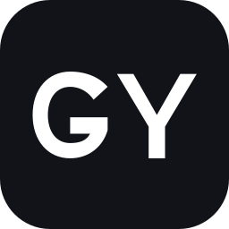

跟手
候选、选词与状态切换服务于你的节奏，不制造额外的学习成本。
GY 输入法从最基础的中文输入开始打磨：候选清晰、选词自然、切换稳定。AI 是在你明确需要时才出现的增强，而不是打断。
候选、选词与状态切换服务于你的节奏，不制造额外的学习成本。
基础输入首先应该可靠、可控，并尊重每一段你正在写下的文字。
改写、翻译和跨设备能力以明确触发为前提，由你决定是否使用。
GY 不被抽象、不被变形。官网主标使用深墨黑或纯白字标；系统小图标使用深墨黑底上的纯白 GY。

系统图标深墨黑底 + 白色 GYgyshurufaWindows 版正在开发与验证。正式下载将在安装包完成测试、代码签名与校验信息准备后开放。
关注发布进度